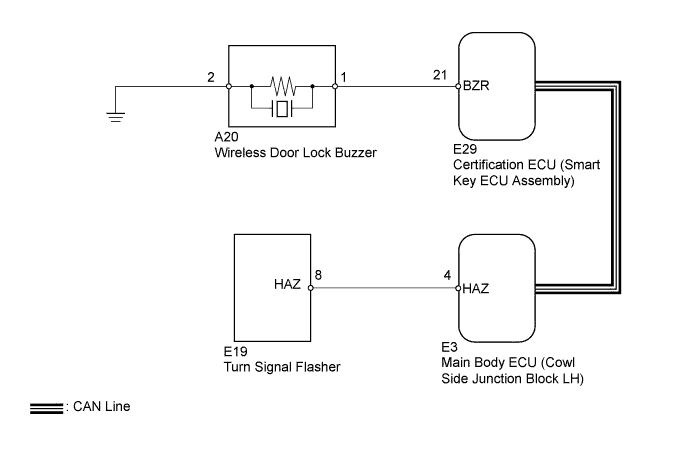
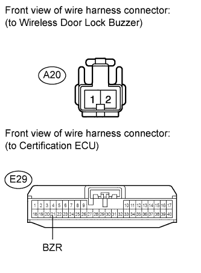

WIRELESS DOOR LOCK CONTROL SYSTEM > No Answer-Back |

| 1.CHECK WIRELESS DOOR LOCK FUNCTION |
Check that the wireless door lock control functions operate with a transmitter (Click here).
| Result | Proceed to |
| Wireless door lock control functions operate normally but turn signal light answer-back does not occur | A |
| Wireless door lock control functions operate normally but wireless door lock buzzer answer-back does not occur | B |
|
| ||||
| A | |
| 2.CHECK HAZARD WARNING LIGHT |
Check that the turn signal lights flash continuously when the hazard warning signal switch is pressed (Click here).
|
| ||||
| OK | ||
| ||
| 3.CHECK HARNESS AND CONNECTOR (WIRELESS DOOR LOCK BUZZER - CERTIFICATION ECU AND BODY GROUND) |
 |
Disconnect the E29 ECU connector.
Disconnect the A20 buzzer connector.
Measure the resistance according to the value(s) in the table below.
| Tester Connection | Condition | Specified Condition |
| A20-1 - E29-21 (BZR) | Always | Below 1 Ω |
| A20-2 - Body ground | ||
| A20-1 - Body ground | Always | 10 kΩ or higher |
|
| ||||
| OK | |
| 4.CHECK WIRELESS DOOR LOCK BUZZER (OPERATION) |
Temporarily replace the wireless door lock buzzer with a new one (Click here).
Check that the wireless door lock buzzer sounds by using the transmitter lock/unlock switch.
|
| ||||
| OK | ||
| ||